MATTERIX ADAPTATION · COMPLETED MATCHED PAIR
Three objects.
One continuous trial.
从同一初始场景连续搬运六孔板、储液槽和枪头架，再由 OT2 完成装头、三轮吸液与分液、弃头。208.5 秒过程中没有导入独立实验的终态，没有重置器皿。
208.5 s on the frozen 600 Hz trial-relative log. Warmup is excluded.
Plate: 0.269 mm; reservoir: 0.420 mm; tip rack: 0.668 mm.
64 tip events. Model liquid has no fluid-force feedback.
EVERY RECORDED STEP
Continuous placement, then pipetting
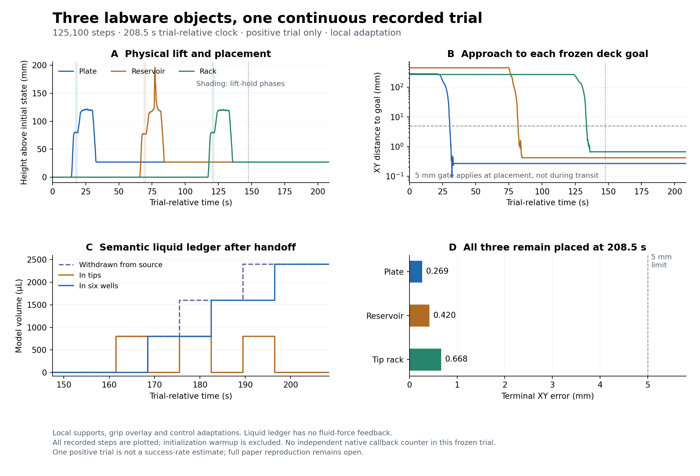
COMPLETE REPLAY · 3,266 VERIFIED FRAMES
Watch the continuous 208.5-second trial
三个器皿连续搬运后交接 OT2，完整保留 208.5 秒试验时间。3,266 帧均通过原始状态绑定、精确时间戳和完整解码核对；下面的十张图直接取自最终 MP4。
Recorded-state replay; rendering advances no physics. The video covers the positive trial. Liquid volumes are semantic model values without fluid-force feedback. Dark surfaces, reflections and tool occlusion remain; colors are not calibrated to the original paper. Full reference reproduction remains open.
Video hash, all-frame checks, clock mapping and visual-review scope ↗
Inspect ten frames decoded from the completed video

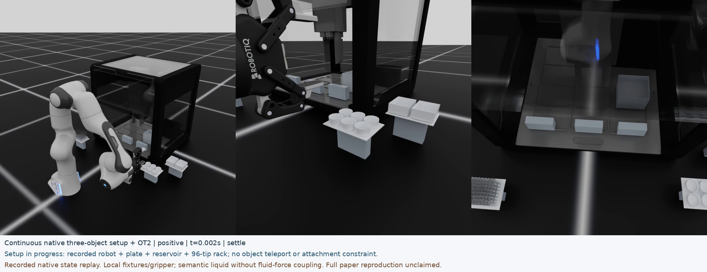

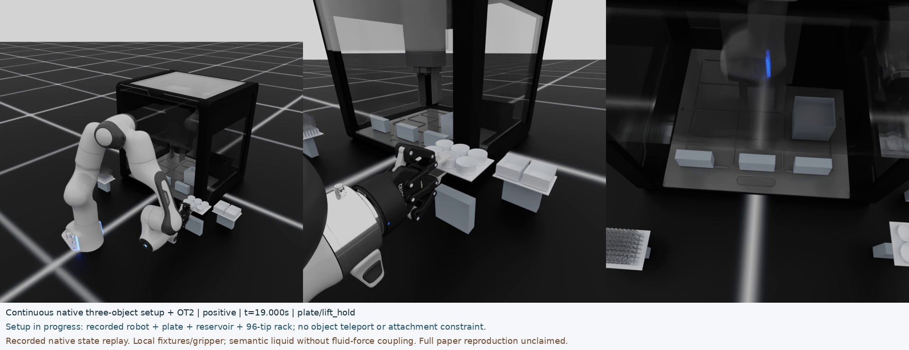

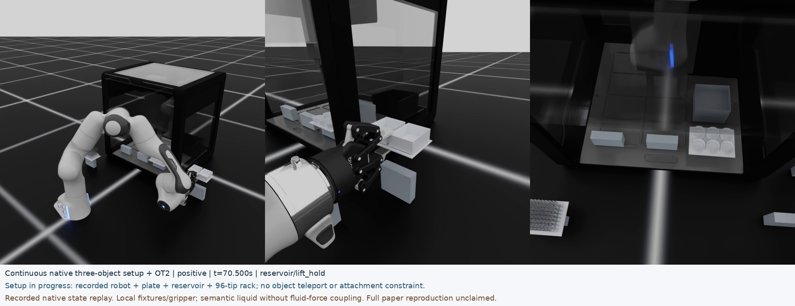

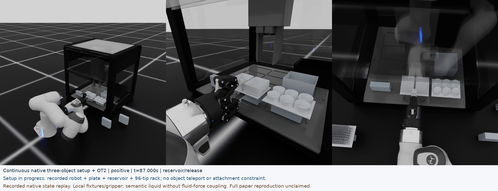

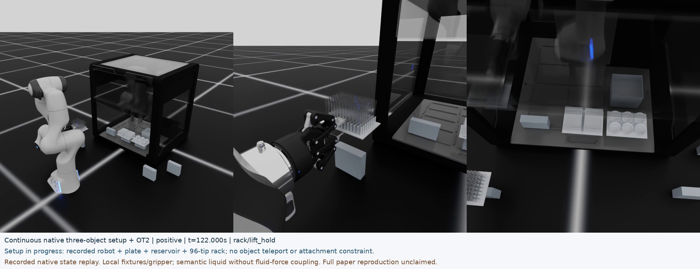

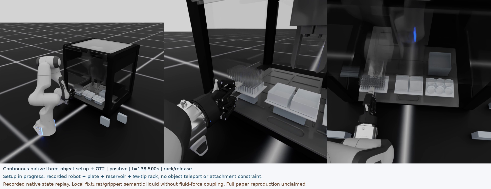

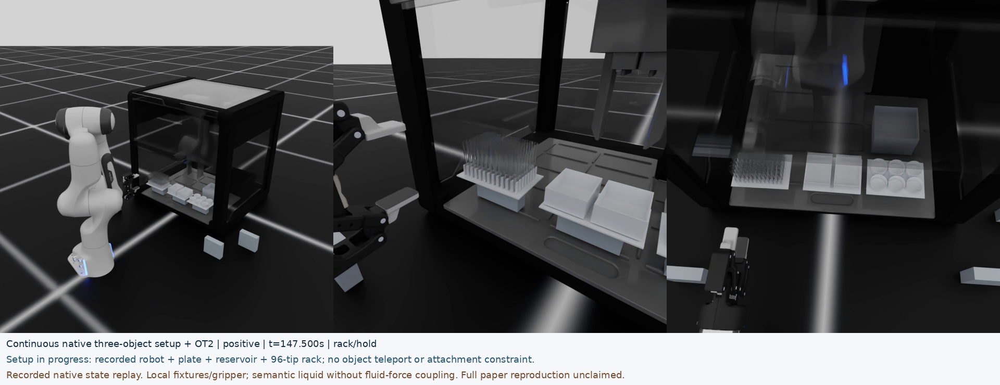

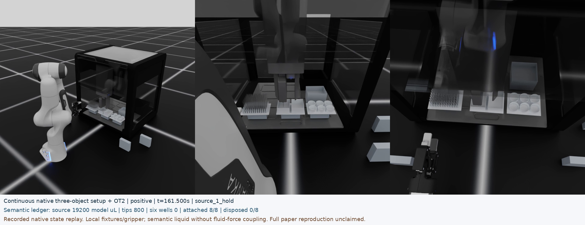

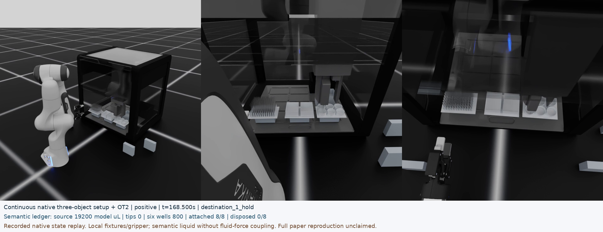

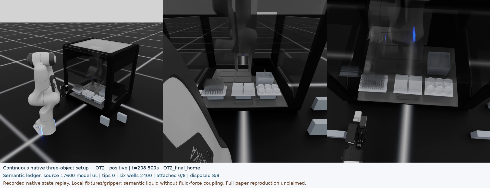
ACTUAL RECORDED STATES · RTX PATH TRACING
Inspect the rack, aspiration and terminal state
Retained three-frame pilot, produced before the complete replay above. R5 stalled at frame 506 and remains archived as an incomplete attempt; the completed video comes from the separately audited R8 recovery. Click any pilot image to inspect it at full resolution.

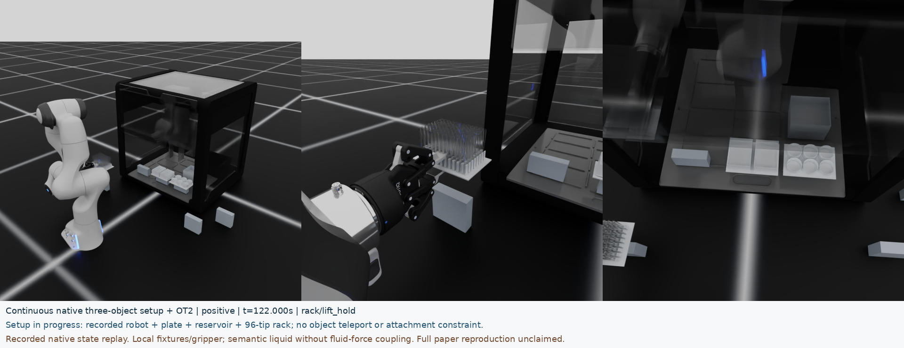

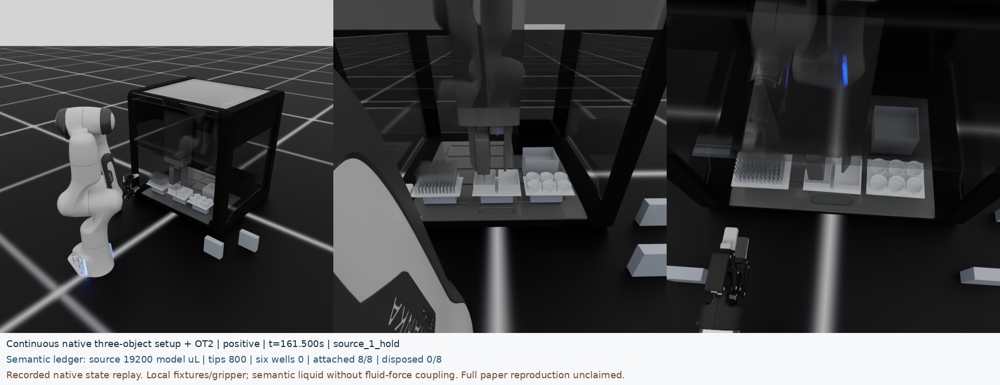

What the images establish
The replay preserves all 35 recorded robot and labware body transforms and scales, plus recorded used-tip positions. Rendering advances no physics steps.
The dark shell, reflections and tool occlusion remain. Cameras are local display choices; colors are not calibrated to the original paper. Path tracing is configured for 96 samples, without an independent effective-sample counter.
MATCHED NO-ASPIRATION CONTROL
Complete control, independently matched
Both runs completed from the original initial scene. Each passed its own physical, event and geometry checks; the independent pair comparison also passed all 10 checks. The site snapshot updates every 10 minutes; old snapshots are labeled stale. Inspect the complete live evidence index.
COMPLETE ASPIRATION ABLATION
Identical motion. Measurable semantic control.
两次运行各完成 125,100 步。逐步核对八类刚体状态后，位姿、速度、关节状态、目标和力矩记录的最大差均为零。正例最终六孔各含 400 µL 模型液体；禁用吸液后，六孔均为零。两次运行都保持 20,000 µL 模型总量守恒。
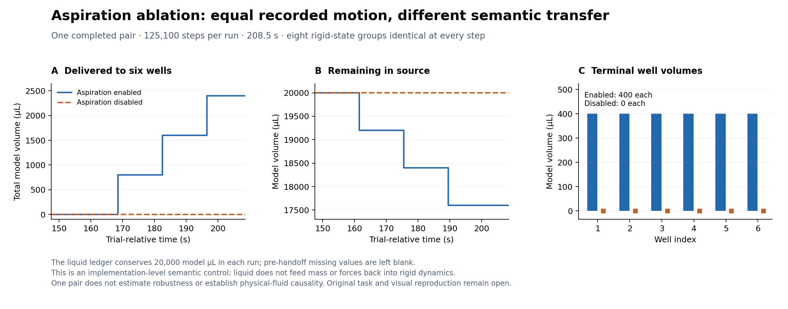
Source, tips, total destination and individual well volumes for both runs. Missing pre-handoff states remain blank. Inspect the independent pair checks, hashes and limitations.
REPRODUCIBLE DATA
Download the measurements
- All 125,100 recorded steps · compressed CSV — object heights and goal errors, semantic volumes and tip states.
- 3,266 selected states · CSV — original poses and velocities, matched to the completed video frames; no interpolation.
- All 64 semantic events · JSON.
- Source hashes, sampling plan and limitations.
Accepted scope
One locally adapted continuous positive and its completed no-aspiration control. Independent checking reproduces the contact, sustained grasp, simultaneous terminal placement, tip alignment, integer-parcel conservation and terminal geometry results.
The frozen source uses one physics step per loop on its normal path. Its 208.5 s label is a trial-relative log; an independent native callback counter was not recorded in this run.
Still open
Local supports, masses, reconstructed fixtures, grip geometry and door control remain adaptations. Liquid transfer is semantic and does not change rigid-body forces. Complete original-asset equivalence, physical liquid coupling, robustness, perception and the full paper task remain unaccepted.